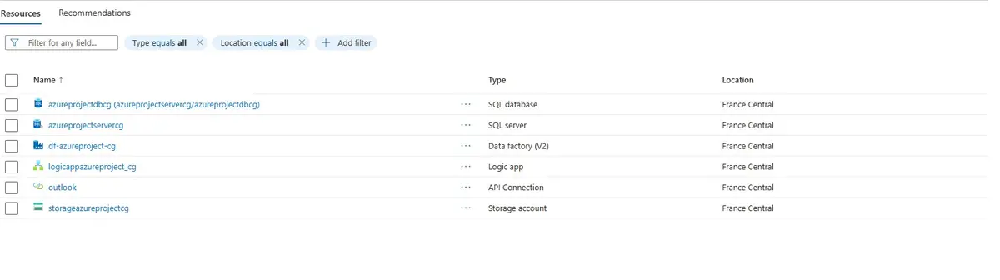
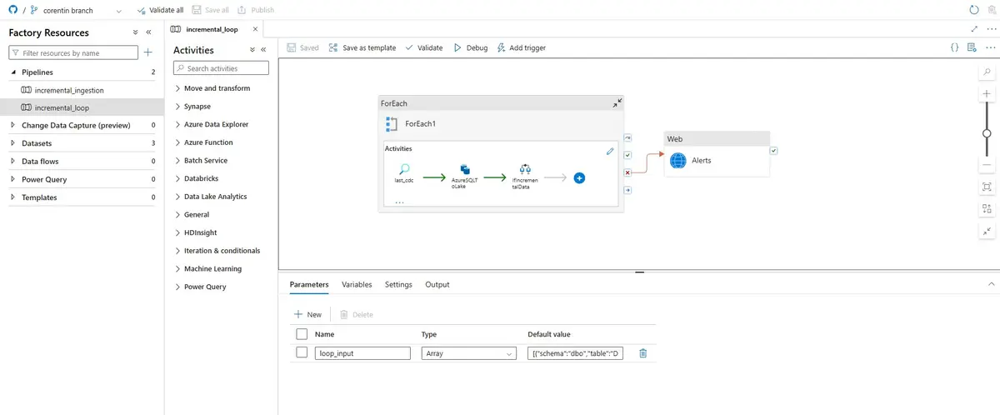
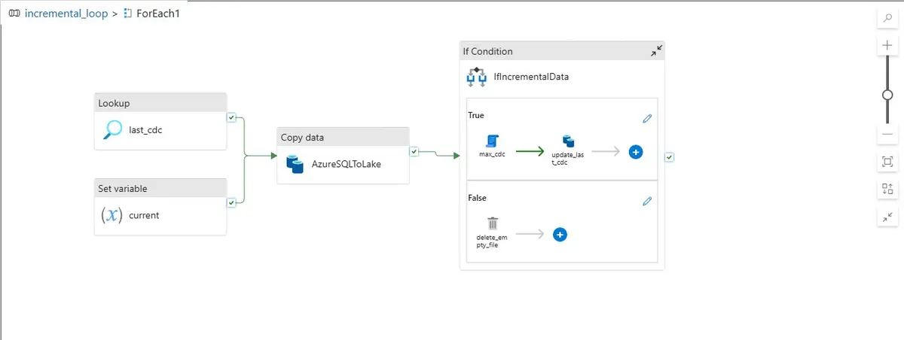
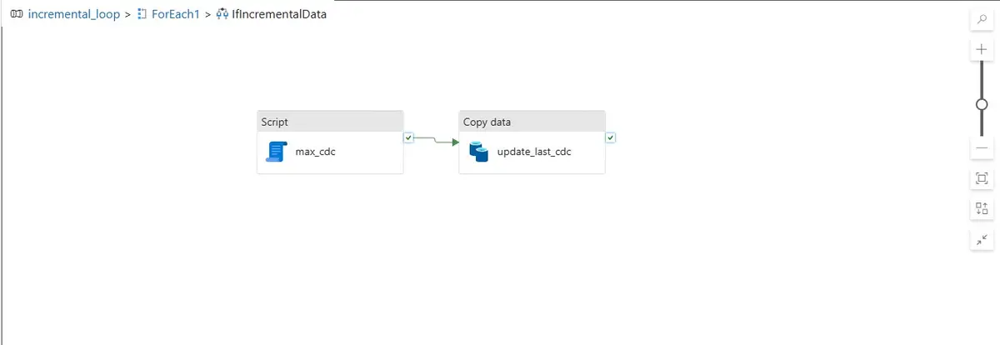

Pipeline de données Spotify - Azure End-to-End
Pipeline d’ingestion et de transformation de données construit de bout en bout à partir du projet d’Ansh Lamba sur YouTube, « Spotify End-To-End Azure Data Engineering Project », puis prolongé avec un chargement incrémental piloté par CDC et un système d’alertes par mail.
- Azure Data Factory
- Azure SQL Database
- Azure Data Lake Storage
- Azure Databricks
- Azure Logic Apps
Architecture
Une base Azure SQL Database sert de source. Azure Data Factory orchestre l’ingestion vers un Data Lake avant transformation dans Databricks. On peut retrouver dans ce projet :
-
Un chargement incrémental table par table (paramètre
loop_input, boucleForEach) piloté par une table de contrôle de type CDC (last_cdc/max_cdc), pour ne prendre en compte que les données modifiées -
Une purge automatique des fichiers vides lorsqu’aucune donnée nouvelle n’est détectée
(
delete_empty_file) - Un système d’alertes par e-mail (Azure Logic Apps + connecteur Outlook) déclenché en fin de pipeline pour suivre l’exécution


incremental_loop : boucle sur les tables, puis alertes.
